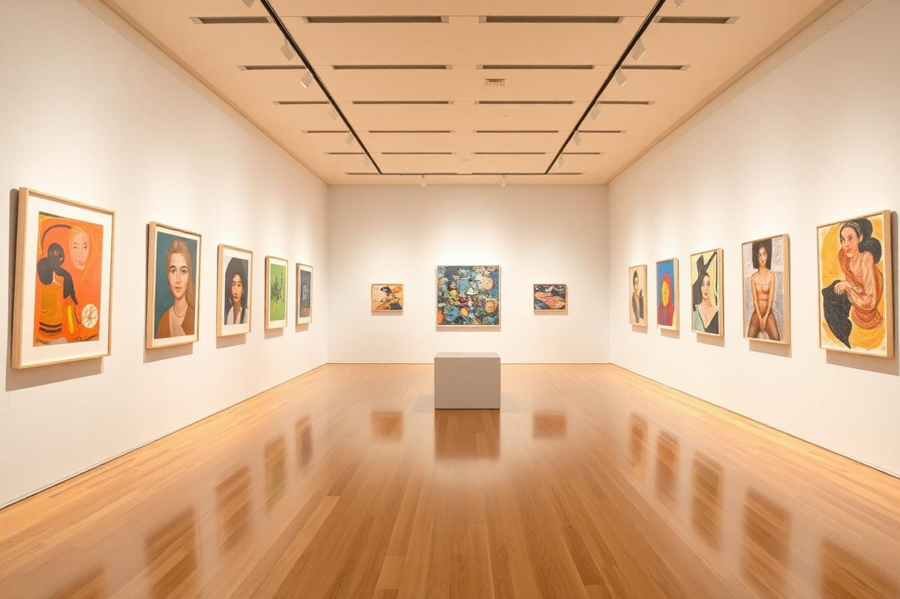
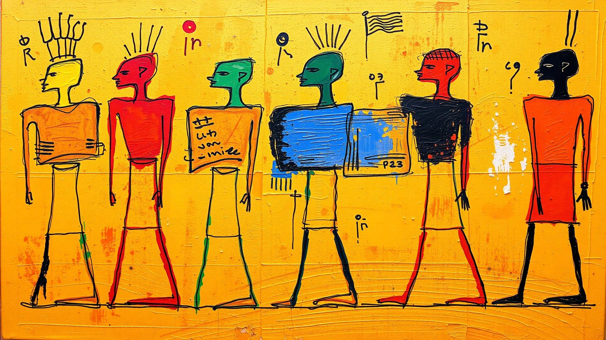

Current Exhibition
Thresholds of Memory
An immersive group exhibition exploring gesture, symbolism, and material memory through painting, sculpture, and mixed media.
Contemporary art platform
Collecting, exhibiting, and elevating contemporary voices from the region through ambitious shows, artist stories, and carefully curated works.

Hussien Gallery serves as a platform for presenting original, serious, and promising contemporary artistic practices with an emphasis on openness, cultural exchange, and long-term artistic value. The gallery builds meaningful relationships between collectors, artists, and visitors through exhibitions, talks, and curatorial programs that celebrate the vitality of the regional art scene.
Curated selection
A selective presentation of installation views, collector previews, and curatorial framing.

Current Exhibition
An immersive group exhibition exploring gesture, symbolism, and material memory through painting, sculpture, and mixed media.
Collectors Preview
A guided presentation of selected works for patrons, curators, and institutional partners.
Curated selection
The same core browsing experience, reimagined with a more polished commercial identity and cleaner visual hierarchy.
Curated selection
Featured artists are presented with the same familiar options in a stronger editorial frame.
Curated selection
Coverage, commentary, and critical attention around the gallery program and represented practices.
Curated selection
Walkthroughs and artist features provide another access point into the exhibition program.